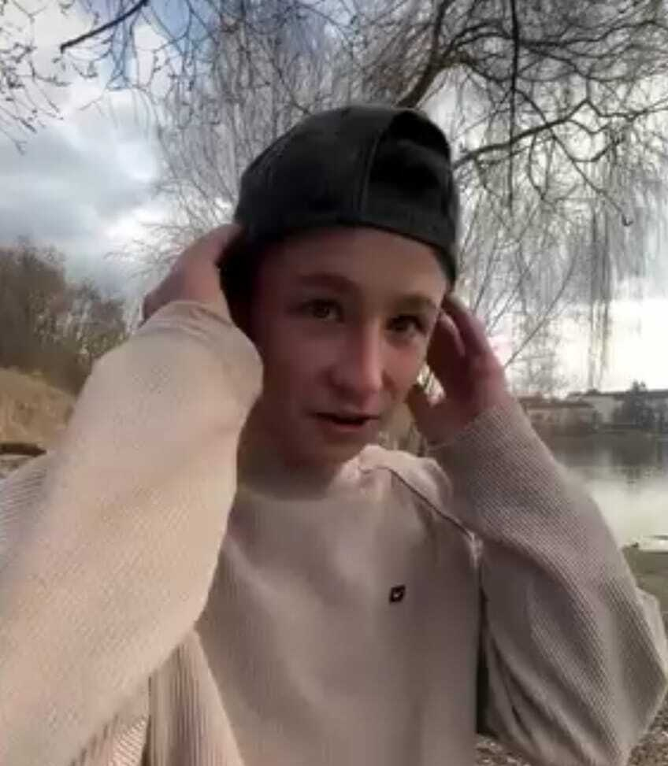

František Švadlenka
Z FriendPedie, otevřené encyklopedie (kterou právě teď nikdo neupravuje)

| Přezdívka | „Švadlas“ |
| Narozen | někdy, někde [citace potřeba] |
| Diagnóza | porucha autistického spektra, demence |
| Vzdělání | základní škola (nedokončeno), prospěch podprůměrný |
| Povolání | nezaměstnaný |
| Rodinný stav | svobodný |
| Rodina | adoptovaný |
| Doprava | motocykl |
Raný život
František Švadlenka, přezdívaný Švadlas, je adoptovaný; okolnosti jeho raného dětství nejsou veřejně zdokumentovány [citace potřeba]. Již od útlého věku je popisován jako osoba s výraznými a tvrdohlavými názory na téměř jakékoli téma.
Vzdělání
Švadlas navštěvoval základní školu, kterou nedokončil. Během školní docházky vykazoval podprůměrný prospěch. V pozdějším věku mu byla diagnostikována porucha autistického spektra 3. stupně, se kterou je podle jeho okolí spojena i řada jeho charakteristických rysů, včetně minimální nebo žádné řeči.
Kariéra
Švadlas je v současnosti nezaměstnaný a v minulosti nikdy nevykonával placené zaměstnání. Jedinou zaznamenanou pracovní zkušeností je příležitostná výpomoc strýci, jejíž přesná náplň není blíže specifikována.
Osobní život
Švadlas je svobodný. V minulosti měl dva vztahy, z nichž ani jeden netrval déle než jeden měsíc. Je nerozlučně spjatý se skupinovou konverzací svých přátel, v níž je pravidelně ústřední postavou.
K přesunu využívá výhradně motocykl bez řidičského oprávnění. Ve vztahu k návykovým látkám je popisován jako nadměrný konzument alkoholu, konopí a dalších omamných a psychotropních látek.
Zdravotní stav
Švadlas se dlouhodobě potýká s demencí, což se projevuje mimo jiné opakovaným vyprávěním stejných historek v krátkém časovém odstupu.
Zajímavosti
- Tvrdí, že jednou potkal celebritu; toto tvrzení nebylo nezávisle potvrzeno. [citace potřeba]
- Zastává pevný názor na správné pořadí, ve kterém se má jíst jídlo na talíři.
- Podle vlastních slov dosud neprohrál žádnou společenskou hru.
- Na schůzky přichází pravidelně s mírným zpožděním.
Citáty
„Já to tak neřekl.“ — Švadlas, o něčem, co přesně takhle řekl
„Tohle je poslední hra, pak jdu spát.“ — Švadlas, ve 2 ráno
„Ta látka nic nedělá.“ — Švadlas, skončil na záchytce